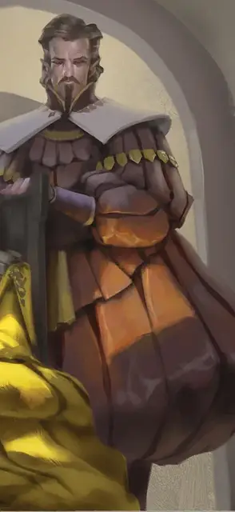

Викторо Кассалантер
Victoro Cassalanter
Средний Гуманоид (Полуэльф), законно-злой, именной НИП

Класс Доспеха 15 (кольцо защиты, красивый проклёпанный доспех)
Хиты 97 (15к8 + 30)
Скорость 30 футов
| мод | спас | ||
|---|---|---|---|
| СИЛ | 13 | +1 | +1 |
| ЛОВ | 13 | +1 | +1 |
| ТЕЛ | 14 | +2 | +6 |
| мод | спас | ||
|---|---|---|---|
| ИНТ | 16 | +3 | +3 |
| МДР | 17 | +3 | +7 |
| ХАР | 18 | +4 | +4 |
Навыки История +7, Проницательность +7, Религия +7, Убеждение +8
Иммунитет к урону яд
Иммунитет к состояниям отравление
Чувства тёмное зрение 60 футов, пассивное Восприятие 13
Языки Общий, Драконий, Инфернальный, Эльфийский
Опасность 10 (5900 опыта)
Бонус мастерства +4
Особенности
Наследие фей. Викторо совершает с преимуществом спасброски от очарования, и магия не может его усыпить.
Особое снаряжение. Викторо носит кольцо защиты и красивый проклёпанный доспех, выглядящий как дорогая одежда. Он носит жезл правления, выглядящий как трость с рубиновым навершием.
Жезл правления. Викторо может действием продемонстрировать жезл и потребовать послушания от всех существ по его выбору, видимых им в пределах 120 футов. Каждая цель должна преуспеть в спасброске Мудрости Сл 15, иначе она станет очарованной Викторо на 8 часов. Будучи очарованным из-за этого эффекта, существо считает его своим истинным предводителем. Получив урон от Викторо или его спутников, или получив приказ, противоречащий его природе, цель перестаёт быть очарованной этим эффектом. Жезл нельзя использовать повторно до следующего рассвета.
Использование заклинаний. Викторо является заклинателем 15-го уровня. Его базовой характеристикой является интеллект (сложность спасбросков заклинаний 15, +7 к попаданию атаками заклинаний). Викторо имеет следующие подготовленные заклинания жреца:
• Заговоры (неограниченно): свет [light], починка [mending], чудотворство [thaumaturgy], указание [guidance], уход за умирающим [spare the dying];
• 1-й уровень (4 ячейки): обнаружение магии [detect magic], очарование личности [charm person], приказ [command], маскировка [disguise self], защита от зла и добра [protection from evil and good], убежище [sanctuary];
• 2-й уровень (3 ячейки): гадание [augury], малое восстановление [lesser restoration], отражения [mirror image], бесследное передвижение [pass without trace], божественное оружие [spiritual weapon];
• 3-й уровень (3 ячейки): мерцание [blink], подсматривание [clairvoyance], рассеивание магии [dispel magic], магический круг [magic circle], защита от энергии [protection from energy];
• 4-й уровень (3 ячейки): изгнание [banishment], переносящая дверь [dimension door], предсказание [divination], свобода перемещения [freedom of movement], превращение [polymorph];
• 5-й уровень (2 ячейки): подчинение личности [dominate person], небесный огонь [flame strike], изменение памяти [modify memory], нашествие насекомых [insect plague];
• 6-й уровень (1 ячейка): полное исцеление [heal];
• 7-й уровень (1 ячейка): божественное слово [divine word];
• 8-й уровень (1 ячейка): землетрясение [earthquake];
Действия
Мультиатака. Викторо совершает две атаки рапирой.
Рапира. Рукопашная атака оружием: +5 к попаданию, досягаемость 5 футов, одна цель. Попадание: 5 (1к8 +1) колющего урона.
Плащ теней (2/день). Викторо становится невидим до конца своего следующего хода. Он сразу становится видимым, если атакует или накладывает заклинание.
Призыв дьявола (перезарядка 9 дней). Викторо призывает шипастого дьявола. Дьявол появляется в свободном пространстве в пределах 30 футов от Викторо, действует как его союзник и не может призывать других дьяволов. Он существует 1 минуту, либо пока он или Викторо не умрут, либо пока Викторо не отпустит его действием.
Описание
Глава рода Кассалантеров— дьявольски очаровательный полуэльф, обожающий деньги и власть. Они с женой заключили сделку с Асмодеем, которому продали души трёх своих детей.
Викторо — священник Асмодея, но его служба Владыке Девяти Преисподних — тайна для всех, кроме жены и ближайших друзей. Большинству жителей Глубоководья он известен как преуспевающий банкир, филантроп и почитатель Латандера. Часть своих доходов он тратит на обеды и ночлежки для бедняков. Но под маской щедрости скрывается эгоистичное чудовище.
Душа Освальдо, старшего сына Викторо, потеряна навеки и не подлежит спасению. Чтобы смягчить свою вину, Викторо придумал план, как спасти души младших близнецов, Теренцио и Эльзерины. По условиям договора, их души будут похищены, как только им исполнится девять, и день этот уже недалеко. Но Викторо может выкупить их, предоставив, как гласит договор, «на одну золотую монету меньше миллиона и принеся в жертву на одну несчастную душу меньше сотни».
Викторо хорошо воспитан, обаятелен, спокоен, наделён крепким здоровьем, долголетием и невосприимчивостью к болезням. Он одевается по последней моде и ходит с тростью с рубиновым набалдашником, хотя опора ему и не требуется. У трости магические свойства жезла правления [rod of rulership]